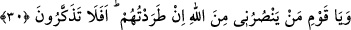
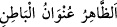
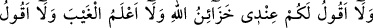
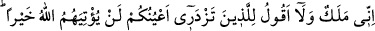
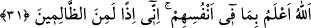

O zaman Allah’a kavuşma, fakir mü’minlerin Allah katındaki dereceleri ve onları
kovmanın Allah’ın gazabını getireceği konularındaki câhillikleri de buna dâhildir.
30. “Ey kavmim! Ben onları kovarsam, Allah’a karşı beni kim savunur? Bunu
düşünmüyor musunuz?”
“Ey kavmim!” Onlar böyle bir sıfatta iken, değer ve yakınlık bakımından böyle bir
mesâbede bulunurlarken “ben onları kovarsam, Allah’a karşı beni kim savunur?”
Allah’ın gazabını benden kim uzaklaştırır; O’nun benden intikam almasını kim
engelleyebilir? “Bunu düşünmüyor musunuz?” Yani içinde bulunduğunuz mezkûr
câhilliğe devam ederek bu mü’minlerin bahsedilen hâlleri üzerinde düşünmüyor
musunuz? Ta ki davranışlarınızın doğruluktan çok uzak olduğunu anlayasınız.
Bir hadiste şöyle buyrulmuştur: “Fakirleri ve miskinleri sevmek, nebîlerin ve
rasûllerin ahlâkındandır. Onlarla birlikte oturmak istememek ise münâfıkların
ahlâkındandır.”[120]
Âyetin işârî yorumu şöyledir: Ruh Nûh’u nefse şöyle diyor: Bedeni tâat ve kulluktan
menettiğin takdirde seni, Allah’ın azab ve kahrından kim koruyacak? Burada sadece
nefsin îmânı ve rûhun ahlâkı ile ahlâklanması ile yetinilmiştir. Nitekim felsefecilerle
inatçıların itikadları böyledir. Onlar: “Kulluğun aslı rubûbiyyeti bilmek, bâtının/iç
âlemin toplu ve tutarlı olması, güzel huylarla bezenmektir. Bedenî amellerin hiçbir
önemi yoktur.” derler. Allah’a yemin olsun ki Allah’ı ve Rasûlü’nü yalanlıyorlar, büyük
dalâlete düşüyorlar. İşin doğrusu -Allah kendilerine rahmet etsin- meşâyıhın şu sözüdür:
“
=Zâhir, bâtının ünvânı, göstergesidir.”
Hz. Peygamber (s.a.) şöyle buyurur: “Hiçbirinizin kalbi dosdoğru olmadıkça îmânı
dosdoğru olmaz. Dili dosdoğru olmadıkça da kalbi dosdoğru olmaz. Lisânı ise ancak
amelleri dosdoğru olunca dosdoğru olur.”[121] Yâni zâhirde şeriatla amel edildiği
zaman şeriatın rükünleri bâtına sirayet eder. Allah Teâlâ nûru şeriata, zulmeti ise
insanın tabiatına yerleştirmiştir. Peygamberler de sırf insanları tabiatlarının
karanlıklarından şeriat nûruna çıkarmak için gönderilmiştir.